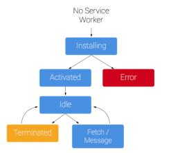

<!DOCTYPE html>
<html lang="zh-CN">
<head>
  <meta charset="UTF-8">
<meta name="viewport" content="width=device-width, initial-scale=1, maximum-scale=2">
<meta name="theme-color" content="#222">
<meta name="generator" content="Hexo 5.4.0">


  <link rel="apple-touch-icon" sizes="180x180" href="/images/apple-touch-icon-next.png">
  <link rel="icon" type="image/png" sizes="32x32" href="/images/favicon-32x32-next.png">
  <link rel="icon" type="image/png" sizes="16x16" href="/images/favicon-16x16-next.png">
  <link rel="mask-icon" href="/images/logo.svg" color="#222">

<link rel="stylesheet" href="/css/main.css">


<link rel="stylesheet" href="https://cdn.jsdelivr.net/npm/@fortawesome/fontawesome-free@5.15.2/css/all.min.css">
  <link rel="stylesheet" href="https://cdn.jsdelivr.net/npm/animate.css@3.1.1/animate.min.css">

<script class="hexo-configurations">
    var NexT = window.NexT || {};
    var CONFIG = {"hostname":"niuniuliuliu.github.io","root":"/","images":"/images","scheme":"Pisces","version":"8.2.2","exturl":false,"sidebar":{"position":"left","display":"post","padding":18,"offset":12},"copycode":false,"bookmark":{"enable":false,"color":"#222","save":"auto"},"fancybox":false,"mediumzoom":false,"lazyload":false,"pangu":false,"comments":{"style":"tabs","active":null,"storage":true,"lazyload":false,"nav":null},"motion":{"enable":true,"async":false,"transition":{"post_block":"fadeIn","post_header":"fadeInDown","post_body":"fadeInDown","coll_header":"fadeInLeft","sidebar":"fadeInUp"}},"prism":false,"i18n":{"placeholder":"搜索...","empty":"没有找到任何搜索结果：${query}","hits_time":"找到 ${hits} 个搜索结果（用时 ${time} 毫秒）","hits":"找到 ${hits} 个搜索结果"}};
  </script>
<meta name="description" content="什么是PWAPWA &#x3D; 普通的网站 + manifest + Service Workers manifest文件包含网站相关的信息，包括图标，背景屏幕，颜色和默认方向。 Service Workers为网站提供了更好的体验（渐进增强），允许将网站添加到设备的主屏幕，离线缓存。">
<meta property="og:type" content="article">
<meta property="og:title" content="PWA(Progressive Web Apps)学习笔记">
<meta property="og:url" content="https://niuniuliuliu.github.io/2021/03/15/pwa-notes/index.html">
<meta property="og:site_name" content="niuniuliuliu">
<meta property="og:description" content="什么是PWAPWA &#x3D; 普通的网站 + manifest + Service Workers manifest文件包含网站相关的信息，包括图标，背景屏幕，颜色和默认方向。 Service Workers为网站提供了更好的体验（渐进增强），允许将网站添加到设备的主屏幕，离线缓存。">
<meta property="og:locale" content="zh_CN">
<meta property="og:image" content="https://niuniuliuliu.github.io/2021/03/15/pwa-notes/life-cycle.jpg">
<meta property="og:image" content="https://developers.google.com/web/fundamentals/push-notifications/images/svgs/browser-to-server.svg">
<meta property="og:image" content="https://developers.google.com/web/fundamentals/push-notifications/images/svgs/server-to-push-service.svg">
<meta property="og:image" content="https://developers.google.com/web/fundamentals/push-notifications/images/svgs/push-service-to-sw-event.svg">
<meta property="article:published_time" content="2021-03-15T08:08:34.000Z">
<meta property="article:modified_time" content="2021-06-06T02:32:54.918Z">
<meta property="article:author" content="niuniuliuliu">
<meta property="article:tag" content="PWA">
<meta name="twitter:card" content="summary">
<meta name="twitter:image" content="https://niuniuliuliu.github.io/2021/03/15/pwa-notes/life-cycle.jpg">


<link rel="canonical" href="https://niuniuliuliu.github.io/2021/03/15/pwa-notes/">


<script class="page-configurations">
  // https://hexo.io/docs/variables.html
  CONFIG.page = {
    sidebar: "",
    isHome : false,
    isPost : true,
    lang   : 'zh-CN'
  };
</script>
<title>PWA(Progressive Web Apps)学习笔记 | niuniuliuliu</title>
  


  <noscript>
  <style>
  body { margin-top: 2rem; }

  .use-motion .menu-item,
  .use-motion .sidebar,
  .use-motion .post-block,
  .use-motion .pagination,
  .use-motion .comments,
  .use-motion .post-header,
  .use-motion .post-body,
  .use-motion .collection-header {
    visibility: visible;
  }

  .use-motion .header,
  .use-motion .site-brand-container .toggle,
  .use-motion .footer { opacity: initial; }

  .use-motion .site-title,
  .use-motion .site-subtitle,
  .use-motion .custom-logo-image {
    opacity: initial;
    top: initial;
  }

  .use-motion .logo-line {
    transform: scaleX(1);
  }

  .search-pop-overlay, .sidebar-nav { display: none; }
  .sidebar-panel { display: block; }
  </style>
</noscript>

</head>

<body itemscope itemtype="http://schema.org/WebPage" class="use-motion">
  <div class="headband"></div>

  <main class="main">
    <header class="header" itemscope itemtype="http://schema.org/WPHeader">
      <div class="header-inner"><div class="site-brand-container">
  <div class="site-nav-toggle">
    <div class="toggle" aria-label="切换导航栏" role="button">
        <span class="toggle-line"></span>
        <span class="toggle-line"></span>
        <span class="toggle-line"></span>
    </div>
  </div>

  <div class="site-meta">

    <a href="/" class="brand" rel="start">
      <i class="logo-line"></i>
      <h1 class="site-title">niuniuliuliu</h1>
      <i class="logo-line"></i>
    </a>
      <p class="site-subtitle" itemprop="description">大龄程序员</p>
  </div>

  <div class="site-nav-right">
    <div class="toggle popup-trigger">
    </div>
  </div>
</div>


<nav class="site-nav">
  <ul class="main-menu menu">
        <li class="menu-item menu-item-home"><a href="/" rel="section"><i class="fa fa-home fa-fw"></i>首页</a></li>
        <li class="menu-item menu-item-tags"><a href="/tags/" rel="section"><i class="fa fa-tags fa-fw"></i>标签</a></li>
        <li class="menu-item menu-item-categories"><a href="/categories/" rel="section"><i class="fa fa-th fa-fw"></i>分类</a></li>
        <li class="menu-item menu-item-archives"><a href="/archives/" rel="section"><i class="fa fa-archive fa-fw"></i>归档</a></li>
  </ul>
</nav>


</div>
        
  
  <div class="toggle sidebar-toggle" role="button">
    <span class="toggle-line"></span>
    <span class="toggle-line"></span>
    <span class="toggle-line"></span>
  </div>

  <aside class="sidebar">

    <div class="sidebar-inner sidebar-nav-active sidebar-toc-active">
      <ul class="sidebar-nav">
        <li class="sidebar-nav-toc">
          文章目录
        </li>
        <li class="sidebar-nav-overview">
          站点概览
        </li>
      </ul>

      <div class="sidebar-panel-container">
        <!--noindex-->
        <div class="post-toc-wrap sidebar-panel">
            <div class="post-toc animated"><ol class="nav"><li class="nav-item nav-level-2"><a class="nav-link" href="#%E4%BB%80%E4%B9%88%E6%98%AFPWA"><span class="nav-number">1.</span> <span class="nav-text">什么是PWA</span></a></li><li class="nav-item nav-level-2"><a class="nav-link" href="#%E4%BD%95%E4%B8%BAService-Workers"><span class="nav-number">2.</span> <span class="nav-text">何为Service Workers</span></a></li><li class="nav-item nav-level-2"><a class="nav-link" href="#Service-Workers%E7%94%9F%E5%91%BD%E5%91%A8%E6%9C%9F"><span class="nav-number">3.</span> <span class="nav-text">Service Workers生命周期</span></a></li><li class="nav-item nav-level-2"><a class="nav-link" href="#Service-Workers%E7%BC%93%E5%AD%98"><span class="nav-number">4.</span> <span class="nav-text">Service Workers缓存</span></a><ol class="nav-child"><li class="nav-item nav-level-3"><a class="nav-link" href="#%E6%8B%A6%E6%88%AA%E5%8C%85%E5%90%ABsave-data%E7%9A%84http%E8%AF%B7%E6%B1%82%E5%A4%B4%E9%83%A8%E7%9A%84%E5%AE%9E%E4%BE%8B"><span class="nav-number">4.1.</span> <span class="nav-text">拦截包含save-data的http请求头部的实例</span></a></li></ol></li><li class="nav-item nav-level-2"><a class="nav-link" href="#%E5%A6%82%E4%BD%95%E4%BF%9D%E8%AF%81Service-Workers%E8%83%BD%E8%8E%B7%E5%8F%96%E5%88%B0%E6%9C%80%E6%96%B0%E7%9A%84%E6%96%87%E4%BB%B6"><span class="nav-number">5.</span> <span class="nav-text">如何保证Service Workers能获取到最新的文件</span></a></li><li class="nav-item nav-level-2"><a class="nav-link" href="#Web%E5%BA%94%E7%94%A8%E6%B8%85%E5%8D%95-mainifest-json"><span class="nav-number">6.</span> <span class="nav-text">Web应用清单(mainifest.json)</span></a><ol class="nav-child"><li class="nav-item nav-level-3"><a class="nav-link" href="#%E7%9B%91%E5%90%AC%E6%B7%BB%E5%8A%A0%E5%88%B0%E4%B8%BB%E5%B1%8F%E5%B9%95%E4%BA%8B%E4%BB%B6"><span class="nav-number">6.1.</span> <span class="nav-text">监听添加到主屏幕事件</span></a></li></ol></li><li class="nav-item nav-level-2"><a class="nav-link" href="#%E6%8E%A8%E9%80%81%E9%80%9A%E7%9F%A5"><span class="nav-number">7.</span> <span class="nav-text">推送通知</span></a><ol class="nav-child"><li class="nav-item nav-level-3"><a class="nav-link" href="#%E5%AE%A2%E6%88%B7%E7%AB%AF%E8%AE%A2%E9%98%85"><span class="nav-number">7.1.</span> <span class="nav-text">客户端订阅</span></a></li><li class="nav-item nav-level-3"><a class="nav-link" href="#%E5%8F%91%E9%80%81%E6%B6%88%E6%81%AF%E5%88%B0push-service"><span class="nav-number">7.2.</span> <span class="nav-text">发送消息到push service</span></a></li><li class="nav-item nav-level-3"><a class="nav-link" href="#push-service%E6%8E%A8%E9%80%81%E5%88%B0%E5%AE%A2%E6%88%B7%E7%AB%AF"><span class="nav-number">7.3.</span> <span class="nav-text">push service推送到客户端</span></a></li></ol></li><li class="nav-item nav-level-2"><a class="nav-link" href="#Servicer-Worker-toolbox"><span class="nav-number">8.</span> <span class="nav-text">Servicer Worker toolbox</span></a></li><li class="nav-item nav-level-2"><a class="nav-link" href="#%E4%B8%80%E4%BA%9B%E5%B7%A5%E5%85%B7"><span class="nav-number">9.</span> <span class="nav-text">一些工具</span></a></li><li class="nav-item nav-level-2"><a class="nav-link" href="#%E5%8F%82%E8%80%83"><span class="nav-number">10.</span> <span class="nav-text">参考</span></a></li></ol></div>
        </div>
        <!--/noindex-->

        <div class="site-overview-wrap sidebar-panel">
          <div class="site-author site-overview-item animated" itemprop="author" itemscope itemtype="http://schema.org/Person">
  <p class="site-author-name" itemprop="name">niuniuliuliu</p>
  <div class="site-description" itemprop="description"></div>
</div>
<div class="site-state-wrap site-overview-item animated">
  <nav class="site-state">
      <div class="site-state-item site-state-posts">
          <a href="/archives/">
        
          <span class="site-state-item-count">5</span>
          <span class="site-state-item-name">日志</span>
        </a>
      </div>
      <div class="site-state-item site-state-categories">
            <a href="/categories/">
          
        <span class="site-state-item-count">2</span>
        <span class="site-state-item-name">分类</span></a>
      </div>
      <div class="site-state-item site-state-tags">
            <a href="/tags/">
          
        <span class="site-state-item-count">4</span>
        <span class="site-state-item-name">标签</span></a>
      </div>
  </nav>
</div>


        </div>
      </div>
        <div class="back-to-top animated" role="button">
          <i class="fa fa-arrow-up"></i>
          <span>0%</span>
        </div>
    </div>
  </aside>
  <div class="sidebar-dimmer"></div>


    </header>

    
  <div class="reading-progress-bar"></div>

  <a href="https://github.com/niuniuliuliu" class="github-corner" title="Follow me on GitHub" aria-label="Follow me on GitHub" rel="noopener" target="_blank"><svg width="80" height="80" viewBox="0 0 250 250" aria-hidden="true"><path d="M0,0 L115,115 L130,115 L142,142 L250,250 L250,0 Z"></path><path d="M128.3,109.0 C113.8,99.7 119.0,89.6 119.0,89.6 C122.0,82.7 120.5,78.6 120.5,78.6 C119.2,72.0 123.4,76.3 123.4,76.3 C127.3,80.9 125.5,87.3 125.5,87.3 C122.9,97.6 130.6,101.9 134.4,103.2" fill="currentColor" style="transform-origin: 130px 106px;" class="octo-arm"></path><path d="M115.0,115.0 C114.9,115.1 118.7,116.5 119.8,115.4 L133.7,101.6 C136.9,99.2 139.9,98.4 142.2,98.6 C133.8,88.0 127.5,74.4 143.8,58.0 C148.5,53.4 154.0,51.2 159.7,51.0 C160.3,49.4 163.2,43.6 171.4,40.1 C171.4,40.1 176.1,42.5 178.8,56.2 C183.1,58.6 187.2,61.8 190.9,65.4 C194.5,69.0 197.7,73.2 200.1,77.6 C213.8,80.2 216.3,84.9 216.3,84.9 C212.7,93.1 206.9,96.0 205.4,96.6 C205.1,102.4 203.0,107.8 198.3,112.5 C181.9,128.9 168.3,122.5 157.7,114.1 C157.9,116.9 156.7,120.9 152.7,124.9 L141.0,136.5 C139.8,137.7 141.6,141.9 141.8,141.8 Z" fill="currentColor" class="octo-body"></path></svg></a>

<noscript>
  <div class="noscript-warning">Theme NexT works best with JavaScript enabled</div>
</noscript>


    <div class="main-inner post posts-expand">


  


<div class="post-block">
  
  

  <article itemscope itemtype="http://schema.org/Article" class="post-content" lang="zh-CN">
    <link itemprop="mainEntityOfPage" href="https://niuniuliuliu.github.io/2021/03/15/pwa-notes/">

    <span hidden itemprop="author" itemscope itemtype="http://schema.org/Person">
      <meta itemprop="image" content="/images/avatar.gif">
      <meta itemprop="name" content="niuniuliuliu">
      <meta itemprop="description" content="">
    </span>

    <span hidden itemprop="publisher" itemscope itemtype="http://schema.org/Organization">
      <meta itemprop="name" content="niuniuliuliu">
    </span>
      <header class="post-header">
        <h1 class="post-title" itemprop="name headline">
          PWA(Progressive Web Apps)学习笔记
        </h1>

        <div class="post-meta-container">
          <div class="post-meta">
    <span class="post-meta-item">
      <span class="post-meta-item-icon">
        <i class="far fa-calendar"></i>
      </span>
      <span class="post-meta-item-text">发表于</span>

      <time title="创建时间：2021-03-15 16:08:34" itemprop="dateCreated datePublished" datetime="2021-03-15T16:08:34+08:00">2021-03-15</time>
    </span>
      <span class="post-meta-item">
        <span class="post-meta-item-icon">
          <i class="far fa-calendar-check"></i>
        </span>
        <span class="post-meta-item-text">更新于</span>
        <time title="修改时间：2021-06-06 10:32:54" itemprop="dateModified" datetime="2021-06-06T10:32:54+08:00">2021-06-06</time>
      </span>
    <span class="post-meta-item">
      <span class="post-meta-item-icon">
        <i class="far fa-folder"></i>
      </span>
      <span class="post-meta-item-text">分类于</span>
        <span itemprop="about" itemscope itemtype="http://schema.org/Thing">
          <a href="/categories/web%E5%89%8D%E7%AB%AF/" itemprop="url" rel="index"><span itemprop="name">web前端</span></a>
        </span>
    </span>

  
</div>

        </div>
      </header>

    
    
    
    <div class="post-body" itemprop="articleBody">
        <h2 id="什么是PWA"><a href="#什么是PWA" class="headerlink" title="什么是PWA"></a>什么是PWA</h2><p>PWA = 普通的网站 + manifest + Service Workers</p>
<p>manifest文件包含网站相关的信息，包括图标，背景屏幕，颜色和默认方向。</p>
<p>Service Workers为网站提供了更好的体验（渐进增强），允许将网站添加到设备的主屏幕，离线缓存。</p>
<span id="more"></span>

<p>PWA应该具备的特性：  </p>
<ul>
<li>响应式的 - 它适应较小的屏幕尺寸</li>
<li>连接无关 - 由于 Service Worker 缓存，它可以离线工作</li>
<li>应用式的交互 - 它使用应用外壳架构进行构建</li>
<li>始终保持最新 - 感谢 Service Worker 的更新过程</li>
<li>安全的 - 它通过 HTTPS 进行工作</li>
<li>可发现的 - 搜索引擎可以找到它</li>
<li>可安装的 - 使用清单文件</li>
<li>可链接的 - 可以简单的通过 URL 来共享</li>
</ul>
<h2 id="何为Service-Workers"><a href="#何为Service-Workers" class="headerlink" title="何为Service Workers"></a>何为Service Workers</h2><p>Service Workers由JavaScript编写，运行在浏览器后台，基于事件驱动。如果用户浏览器不支持Service Workers的话，并不会造成影响，网站还可以作为普通网站进行浏览，因此做到了“渐进增强”。</p>
<p>通过Service Workers，可以缓存 UI 外壳(用户界面所必需的最小化的 HTML、CSS 和 JavaScript)，动态内容在UI外壳加载后再加载，为用户提供类似原生app的体验。</p>
<ul>
<li>Service Workers运行在自己的全局脚本上下文中  </li>
<li>不绑定到具体的网页  </li>
<li>无法修改网页中的元素，因为它无法访问 DOM  </li>
<li>只能使用 HTTPS(localhost本地开发除外)  </li>
<li>Service Workser运行在不同的线程中，不会被阻塞  </li>
</ul>
<h2 id="Service-Workers生命周期"><a href="#Service-Workers生命周期" class="headerlink" title="Service Workers生命周期"></a>Service Workers生命周期</h2><p></p>
<p>从生命周期图中可以看出，当第一次加载页面时，并不会有激活的 Service Worker 来控制页面。只有当 Service Worker 安装完成并且用户刷新了页面或跳转至网站的其他页面，Service Worker 才会激活并开始拦截请求。<br>如果需要在第一次加载时，就希望Service Workers激活并开始拦截请求，可以通过如下方式立即激活Service Workers。</p>
<figure class="highlight plain"><table><tr><td class="gutter"><pre><span class="line">1</span><br><span class="line">2</span><br><span class="line">3</span><br><span class="line">4</span><br></pre></td><td class="code"><pre><span class="line">self.addEventListener(&#39;install&#39;, function(event) &#123;</span><br><span class="line">  &#x2F;&#x2F;使 Service Worker 解雇当前活动的worker， 并且一旦进入等待阶段就会激活自身，触发activate事件</span><br><span class="line">  event.waitUntil(self.skipWaiting());</span><br><span class="line">&#125;);</span><br></pre></td></tr></table></figure>
<p>结合self.clients.claim() 一起使用，以确保底层 Service Worker 的更新立即生效。</p>
<figure class="highlight plain"><table><tr><td class="gutter"><pre><span class="line">1</span><br><span class="line">2</span><br><span class="line">3</span><br><span class="line">4</span><br><span class="line">5</span><br><span class="line">6</span><br><span class="line">7</span><br><span class="line">8</span><br><span class="line">9</span><br><span class="line">10</span><br><span class="line">11</span><br><span class="line">12</span><br><span class="line">13</span><br></pre></td><td class="code"><pre><span class="line">self.addEventListener(&#39;activate&#39;, function(event) &#123;</span><br><span class="line">  e.waitUntil(</span><br><span class="line">        caches.keys().then(function(keyList) &#123;</span><br><span class="line">            return Promise.all(keyList.map(function(key) &#123;</span><br><span class="line">                if (key !&#x3D;&#x3D; cacheName) &#123;</span><br><span class="line">                    console.log(&#39;[ServiceWorker] Removing old cache&#39;, key);</span><br><span class="line">                    return caches.delete(key);</span><br><span class="line">                &#125;</span><br><span class="line">            &#125;));</span><br><span class="line">        &#125;)</span><br><span class="line">    );</span><br><span class="line">    return self.clients.claim(); &#x2F;&#x2F;确保底层 Service Worker 的更新立即生效</span><br><span class="line">&#125;);</span><br></pre></td></tr></table></figure>


<h2 id="Service-Workers缓存"><a href="#Service-Workers缓存" class="headerlink" title="Service Workers缓存"></a>Service Workers缓存</h2><figure class="highlight plain"><table><tr><td class="gutter"><pre><span class="line">1</span><br><span class="line">2</span><br><span class="line">3</span><br><span class="line">4</span><br><span class="line">5</span><br><span class="line">6</span><br><span class="line">7</span><br><span class="line">8</span><br><span class="line">9</span><br><span class="line">10</span><br><span class="line">11</span><br><span class="line">12</span><br><span class="line">13</span><br><span class="line">14</span><br><span class="line">15</span><br><span class="line">16</span><br><span class="line">17</span><br><span class="line">18</span><br><span class="line">19</span><br><span class="line">20</span><br><span class="line">21</span><br><span class="line">22</span><br><span class="line">23</span><br><span class="line">24</span><br><span class="line">25</span><br><span class="line">26</span><br><span class="line">27</span><br><span class="line">28</span><br><span class="line">29</span><br><span class="line">30</span><br><span class="line">31</span><br><span class="line">32</span><br><span class="line">33</span><br><span class="line">34</span><br><span class="line">35</span><br><span class="line">36</span><br><span class="line">37</span><br><span class="line">38</span><br><span class="line">39</span><br><span class="line">40</span><br><span class="line">41</span><br><span class="line">42</span><br><span class="line">43</span><br></pre></td><td class="code"><pre><span class="line">var cacheKey &#x3D; &quot;first-pwa&quot;;  &#x2F;&#x2F;缓存的key，可以添加多个不同的缓存</span><br><span class="line"></span><br><span class="line">var cacheList &#x3D; [   &#x2F;&#x2F;需要缓存的文件列表</span><br><span class="line">    &#39;&#x2F;&#39;,</span><br><span class="line">    &#39;index.html&#39;,</span><br><span class="line">    &#39;icon.png&#39;,</span><br><span class="line">    &#39;main.css&#39;</span><br><span class="line">];</span><br><span class="line"></span><br><span class="line">&#x2F;&#x2F;在安装过程中缓存已知的资源</span><br><span class="line">self.addEventListener(&#39;install&#39;, event &#x3D;&gt; &#123;  &#x2F;&#x2F;监听install事件</span><br><span class="line">    event.waitUntil(  &#x2F;&#x2F;install完成后</span><br><span class="line">        caches.open(cacheKey)  &#x2F;&#x2F;打开cache</span><br><span class="line">            .then(cache &#x3D;&gt; cache.addAll(cacheList))  &#x2F;&#x2F;将需要缓存的文件加入cache列表</span><br><span class="line">            .then(() &#x3D;&gt; self.skipWaiting())  &#x2F;&#x2F;使 Service Worker 解雇当前活动的worker，</span><br><span class="line">                                            &#x2F;&#x2F; 并且一旦进入等待阶段就会激活自身，触发activate事件</span><br><span class="line">                                            &#x2F;&#x2F;无需等待用户跳转或刷新页面</span><br><span class="line">    );</span><br><span class="line">&#125;);</span><br><span class="line"></span><br><span class="line"></span><br><span class="line">&#x2F;&#x2F;拦截fetch请求</span><br><span class="line">self.addEventListener(&#39;fetch&#39;, event &#x3D;&gt; &#123;</span><br><span class="line">    event.respondWith(</span><br><span class="line">        caches.match(event.request).then(response &#x3D;&gt; &#123; &#x2F;&#x2F;如果请求的资源在缓存中</span><br><span class="line">            if (response !&#x3D; null) return response;  &#x2F;&#x2F;返回缓存资源</span><br><span class="line"></span><br><span class="line">            &#x2F;&#x2F;通过网络获取资源，并缓存</span><br><span class="line">            var requestToCache &#x3D; event.request.clone(); &#x2F;&#x2F;克隆当前请求</span><br><span class="line">            return fetch(requestToCache.url).then(response &#x3D;&gt; &#123;</span><br><span class="line">                if (!response || response.status !&#x3D;&#x3D; 200) &#123;</span><br><span class="line">                    return response;  &#x2F;&#x2F;返回错误的响应</span><br><span class="line">                &#125;</span><br><span class="line">                var responseToCache &#x3D; response.clone(); &#x2F;&#x2F;克隆响应</span><br><span class="line">                caches.open(cacheKey)</span><br><span class="line">                    .then(cache &#x3D;&gt; &#123;</span><br><span class="line">                        cache.put(requestToCache, responseToCache);  &#x2F;&#x2F;将响应添加到缓存中</span><br><span class="line">                    &#125;);</span><br><span class="line">                return response;  &#x2F;&#x2F;返回响应</span><br><span class="line">            &#125;);</span><br><span class="line">        &#125;)</span><br><span class="line">    );</span><br><span class="line">&#125;);</span><br></pre></td></tr></table></figure>

<p>属于Service Workers作用域范围内的所有http请求都将触发fetch事件，包括html、css、js、图片等。</p>
<h3 id="拦截包含save-data的http请求头部的实例"><a href="#拦截包含save-data的http请求头部的实例" class="headerlink" title="拦截包含save-data的http请求头部的实例"></a>拦截包含save-data的http请求头部的实例</h3><p>如果用户在浏览器中启用了节省数据的功能，浏览器在每个http请求头部中会加入save-data请求头。</p>
<figure class="highlight plain"><table><tr><td class="gutter"><pre><span class="line">1</span><br><span class="line">2</span><br><span class="line">3</span><br><span class="line">4</span><br><span class="line">5</span><br><span class="line">6</span><br><span class="line">7</span><br><span class="line">8</span><br><span class="line">9</span><br><span class="line">10</span><br><span class="line">11</span><br><span class="line">12</span><br><span class="line">13</span><br><span class="line">14</span><br></pre></td><td class="code"><pre><span class="line">this.addEventListener(&#39;fetch&#39;, function (event) &#123;</span><br><span class="line"> </span><br><span class="line">  if(event.request.headers.get(&#39;save-data&#39;))&#123;</span><br><span class="line">    &#x2F;&#x2F; 我们想要节省数据，所以限制了图标和字体</span><br><span class="line">    if (event.request.url.includes(&#39;fonts.googleapis.com&#39;)) &#123;</span><br><span class="line">        &#x2F;&#x2F; 不返回任何内容</span><br><span class="line">        event.respondWith(new Promise(resolve &#x3D;&gt; resolve(new Response(&#39;&#39;, &#123;</span><br><span class="line">            status: 417,</span><br><span class="line">            statusText: &#39;Ignore fonts to save data.&#39;</span><br><span class="line">            &#125;)))</span><br><span class="line">        );</span><br><span class="line">    &#125;</span><br><span class="line">  &#125;</span><br><span class="line">&#125;);</span><br></pre></td></tr></table></figure>


<h2 id="如何保证Service-Workers能获取到最新的文件"><a href="#如何保证Service-Workers能获取到最新的文件" class="headerlink" title="如何保证Service Workers能获取到最新的文件"></a>如何保证Service Workers能获取到最新的文件</h2><ul>
<li>更新存储缓存的名称。</li>
<li>缓存破坏，每次发布时更新文件的名称，如增加一个版本号等。</li>
</ul>
<h2 id="Web应用清单-mainifest-json"><a href="#Web应用清单-mainifest-json" class="headerlink" title="Web应用清单(mainifest.json)"></a>Web应用清单(mainifest.json)</h2><p>mainifest.json需要在网页head标签中引用</p>
<figure class="highlight plain"><table><tr><td class="gutter"><pre><span class="line">1</span><br><span class="line">2</span><br><span class="line">3</span><br><span class="line">4</span><br><span class="line">5</span><br><span class="line">6</span><br><span class="line">7</span><br><span class="line">8</span><br><span class="line">9</span><br><span class="line">10</span><br><span class="line">11</span><br><span class="line">12</span><br><span class="line">13</span><br><span class="line">14</span><br><span class="line">15</span><br><span class="line">16</span><br><span class="line">17</span><br><span class="line">18</span><br><span class="line">19</span><br><span class="line">20</span><br><span class="line">21</span><br><span class="line">22</span><br><span class="line">23</span><br><span class="line">24</span><br></pre></td><td class="code"><pre><span class="line">&lt;!DOCTYPE html&gt;</span><br><span class="line">&lt;html lang&#x3D;&quot;en&quot;&gt;</span><br><span class="line">&lt;head&gt;</span><br><span class="line">    &lt;meta charset&#x3D;&quot;UTF-8&quot;&gt;</span><br><span class="line">    &lt;link rel&#x3D;&quot;stylesheet&quot; href&#x3D;&quot;https:&#x2F;&#x2F;fonts.googleapis.com&#x2F;css?family&#x3D;Lato&quot;&gt;</span><br><span class="line">    &lt;link rel&#x3D;&quot;stylesheet&quot; href&#x3D;&quot;main.css&quot;&gt;</span><br><span class="line">    &lt;link rel&#x3D;&quot;manifest&quot; href&#x3D;&quot;manifest.json&quot;&#x2F;&gt;</span><br><span class="line">    &lt;title&gt;PWA&lt;&#x2F;title&gt;</span><br><span class="line">&lt;&#x2F;head&gt;</span><br><span class="line">&lt;body&gt;</span><br><span class="line">&lt;h1&gt;Hello PWA!&lt;&#x2F;h1&gt;</span><br><span class="line">&lt;script type&#x3D;&quot;text&#x2F;javascript&quot;&gt;</span><br><span class="line">    if (navigator.serviceWorker !&#x3D; null) &#123;</span><br><span class="line">        navigator.serviceWorker.register(&#39;sw.js&#39;).then(registration &#x3D;&gt; &#123;</span><br><span class="line">            console.log(&#39;ServiceWorker registration successful with scope: &#39;, registration.scope);</span><br><span class="line">        &#125;).catch(function (err) &#123;</span><br><span class="line">            console.log(&#39;ServiceWorker registration failed: &#39;, err);</span><br><span class="line">        &#125;);</span><br><span class="line">    &#125; else &#123;</span><br><span class="line">        &#x2F;&#x2F;serviceWorker is not supported</span><br><span class="line">    &#125;</span><br><span class="line">&lt;&#x2F;script&gt;</span><br><span class="line">&lt;&#x2F;body&gt;</span><br><span class="line">&lt;&#x2F;html&gt;</span><br></pre></td></tr></table></figure>

<p>manifest.json中包含的字段主要包括：</p>
<figure class="highlight plain"><table><tr><td class="gutter"><pre><span class="line">1</span><br><span class="line">2</span><br><span class="line">3</span><br><span class="line">4</span><br><span class="line">5</span><br><span class="line">6</span><br><span class="line">7</span><br><span class="line">8</span><br><span class="line">9</span><br><span class="line">10</span><br><span class="line">11</span><br><span class="line">12</span><br><span class="line">13</span><br><span class="line">14</span><br><span class="line">15</span><br><span class="line">16</span><br><span class="line">17</span><br></pre></td><td class="code"><pre><span class="line">&#123;</span><br><span class="line">  &quot;name&quot;: &quot;First PWA&quot;,</span><br><span class="line">  &quot;short_name&quot;: &quot;pwa&quot;,</span><br><span class="line">  &quot;display&quot;: &quot;standalone&quot;,</span><br><span class="line">  &quot;start_url&quot;: &quot;&#x2F;index.html&quot;,</span><br><span class="line">  &quot;theme_color&quot;: &quot;#FFDF00&quot;,</span><br><span class="line">  &quot;background_color&quot;: &quot;#FFDF00&quot;,</span><br><span class="line">  &quot;orientation&quot;: &quot;landscape&quot;,</span><br><span class="line">  &quot;scope&quot;: &quot;&#x2F;&quot;,</span><br><span class="line">  &quot;icons&quot;: [</span><br><span class="line">    &#123;</span><br><span class="line">      &quot;src&quot;: &quot;icon.png&quot;,</span><br><span class="line">      &quot;sizes&quot;: &quot;144x144&quot;,</span><br><span class="line">      &quot;type&quot;: &quot;image&#x2F;png&quot;</span><br><span class="line">    &#125;</span><br><span class="line">  ]</span><br><span class="line">&#125;</span><br></pre></td></tr></table></figure>
<ul>
<li>name：当用户被提示安装应用时出现的文本。</li>
<li>short_name：当应用安装后出现在用户主屏幕上的文本。</li>
<li>display：显示模式，默认为browser。包括fullscreen、standalone、minimal-ui 或 browser 。<ul>
<li>fullscreen：应用占用整个可用的显示区域。</li>
<li>standalone：应用以看起来像一个独立的原生应用。此模式下，用户代理将排除诸如 URL 栏等标准浏览器 UI 元素，但可以包括诸如状态栏和系统返回按钮的其他系统 UI 元素。</li>
<li>minimal-ui：此模式类似于 fullscreen，但为终端用户提供了可访问的最小 UI 元素集合，例如，后退按钮、前进按钮、重载按钮以及查看网页地址的一些方式。</li>
<li>browser：使用操作系统内置的标准浏览器来打开 Web 应用。</li>
</ul>
</li>
<li>start_url：应用启动时的第一个页面。</li>
<li>theme_color：可以对浏览器的地址栏进行着色，以符合网站的主色调。</li>
<li>background_color：启动时的背景色。</li>
<li>orientation： 屏幕方向。</li>
<li>icons：当应用被添加到设备主屏幕时所显示的图标。</li>
</ul>
<p>参考 <a target="_blank" rel="noopener" href="https://developer.mozilla.org/en-US/docs/Web/Manifest">https://developer.mozilla.org/en-US/docs/Web/Manifest</a></p>
<h3 id="监听添加到主屏幕事件"><a href="#监听添加到主屏幕事件" class="headerlink" title="监听添加到主屏幕事件"></a>监听添加到主屏幕事件</h3><figure class="highlight plain"><table><tr><td class="gutter"><pre><span class="line">1</span><br><span class="line">2</span><br><span class="line">3</span><br><span class="line">4</span><br><span class="line">5</span><br><span class="line">6</span><br><span class="line">7</span><br><span class="line">8</span><br><span class="line">9</span><br><span class="line">10</span><br><span class="line">11</span><br><span class="line">12</span><br><span class="line">13</span><br><span class="line">14</span><br><span class="line">15</span><br></pre></td><td class="code"><pre><span class="line">&#x2F;&#x2F;监听添加到主屏幕事件</span><br><span class="line">window.addEventListener(&#39;beforeinstallprompt&#39;, function (event) &#123;</span><br><span class="line">    &#x2F;&#x2F; &#x2F;&#x2F;取消添加</span><br><span class="line">    &#x2F;&#x2F; e.preventDefault();</span><br><span class="line">    &#x2F;&#x2F; return false;</span><br><span class="line"></span><br><span class="line">    event.userChoice.then(function (result) &#123;</span><br><span class="line">        console.log(result.outcome);</span><br><span class="line">        if (result.outcome &#x3D;&#x3D; &#39;dismissed&#39;) &#123;</span><br><span class="line"></span><br><span class="line">        &#125; else &#123;</span><br><span class="line"></span><br><span class="line">        &#125;</span><br><span class="line">    &#125;);</span><br><span class="line">&#125;);</span><br></pre></td></tr></table></figure>

<h2 id="推送通知"><a href="#推送通知" class="headerlink" title="推送通知"></a>推送通知</h2><p>目前FireFox、Chrome、Edge 已经支持 Push API。推送的过程主要分为三个步骤：</p>
<ul>
<li>客户端订阅</li>
<li>发送需要推送的消息到push service</li>
<li>push service推送到客户端</li>
</ul>
<h3 id="客户端订阅"><a href="#客户端订阅" class="headerlink" title="客户端订阅"></a>客户端订阅</h3><p></p>
<p>在订阅前，需要先生成VAPID， VAPID是“自主应用服务器标识” ( Voluntary Application Server Identification ) 的简称。它是一个规范，定义了应用服务器和推送服务之间的握手。</p>
<p>1.客户端订阅消息，此时浏览器会询问用户是否允许消息推送通知。<br>2.从浏览器获取PushSubscription对象，其中包含了客户端的信息，可以理解为标示设备的id。  </p>
<figure class="highlight plain"><table><tr><td class="gutter"><pre><span class="line">1</span><br><span class="line">2</span><br><span class="line">3</span><br><span class="line">4</span><br><span class="line">5</span><br><span class="line">6</span><br><span class="line">7</span><br><span class="line">8</span><br><span class="line">9</span><br><span class="line">10</span><br><span class="line">11</span><br><span class="line">12</span><br><span class="line">13</span><br><span class="line">14</span><br><span class="line">15</span><br><span class="line">16</span><br><span class="line">17</span><br><span class="line">18</span><br><span class="line">19</span><br><span class="line">20</span><br><span class="line">21</span><br><span class="line">22</span><br><span class="line">23</span><br><span class="line">24</span><br><span class="line">25</span><br><span class="line">26</span><br><span class="line">27</span><br><span class="line">28</span><br><span class="line">29</span><br><span class="line">30</span><br><span class="line">31</span><br><span class="line">32</span><br><span class="line">33</span><br><span class="line">34</span><br><span class="line">35</span><br><span class="line">36</span><br><span class="line">37</span><br><span class="line">38</span><br><span class="line">39</span><br><span class="line">40</span><br><span class="line">41</span><br><span class="line">42</span><br><span class="line">43</span><br><span class="line">44</span><br><span class="line">45</span><br><span class="line">46</span><br></pre></td><td class="code"><pre><span class="line">var vapidPublicKey &#x3D; &#39;BF0eSi4ANvVKr017Gr_Xzb-bN9l8-c3qRUHqVU6C-vFy_i3xgrKDY-13BPF5BVx93IVObJwnwrt5vjX-ltM6Uuo&#39;;</span><br><span class="line"></span><br><span class="line">function urlBase64ToUint8Array(base64String) &#123;</span><br><span class="line">        const padding &#x3D; &#39;&#x3D;&#39;.repeat((4 - base64String.length % 4) % 4);</span><br><span class="line">        const base64 &#x3D; (base64String + padding)</span><br><span class="line">            .replace(&#x2F;\-&#x2F;g, &#39;+&#39;)</span><br><span class="line">            .replace(&#x2F;_&#x2F;g, &#39;&#x2F;&#39;);</span><br><span class="line">        const rawData &#x3D; window.atob(base64);</span><br><span class="line">        const outputArray &#x3D; new Uint8Array(rawData.length);</span><br><span class="line">        for (let i &#x3D; 0; i &lt; rawData.length; ++i) &#123;</span><br><span class="line">            outputArray[i] &#x3D; rawData.charCodeAt(i);</span><br><span class="line">        &#125;</span><br><span class="line">        return outputArray;</span><br><span class="line">    &#125;</span><br><span class="line"></span><br><span class="line">    function subscribeForPushNotification(registration) &#123;</span><br><span class="line">        return registration.pushManager.getSubscription()</span><br><span class="line">            .then(function (subscription) &#123;</span><br><span class="line">                if (subscription) &#123;</span><br><span class="line">                    return;</span><br><span class="line">                &#125;</span><br><span class="line">                return registration.pushManager.subscribe(&#123;</span><br><span class="line">                    userVisibleOnly: true,</span><br><span class="line">                    applicationServerKey: urlBase64ToUint8Array(vapidPublicKey)</span><br><span class="line">                &#125;)</span><br><span class="line">                    .then(function (subscription) &#123;</span><br><span class="line">                        var rawKey &#x3D; subscription.getKey ? subscription.getKey(&#39;p256dh&#39;) : &#39;&#39;;</span><br><span class="line">                        var key &#x3D; rawKey ? btoa(String.fromCharCode.apply(null, new Uint8Array(rawKey))) : &#39;&#39;;</span><br><span class="line">                        var rawAuthSecret &#x3D; subscription.getKey ? subscription.getKey(&#39;auth&#39;) : &#39;&#39;;</span><br><span class="line">                        var authSecret &#x3D; rawAuthSecret ?</span><br><span class="line">                            btoa(String.fromCharCode.apply(null, new Uint8Array(rawAuthSecret))) : &#39;&#39;;</span><br><span class="line">                        var endpoint &#x3D; subscription.endpoint;</span><br><span class="line">                        return fetch(&#39;http:&#x2F;&#x2F;localhost:3001&#x2F;api&#x2F;register&#39;, &#123;</span><br><span class="line">                            method: &#39;post&#39;,</span><br><span class="line">                            headers: new Headers(&#123;</span><br><span class="line">                                &#39;content-type&#39;: &#39;application&#x2F;json&#39;</span><br><span class="line">                            &#125;),</span><br><span class="line">                            body: JSON.stringify(&#123;</span><br><span class="line">                                endpoint: subscription.endpoint,</span><br><span class="line">                                key: key,</span><br><span class="line">                                authSecret: authSecret,</span><br><span class="line">                            &#125;),</span><br><span class="line">                        &#125;);</span><br><span class="line">                    &#125;);</span><br><span class="line">            &#125;);</span><br><span class="line">    &#125;</span><br></pre></td></tr></table></figure>
<p>3.将PushSubscription发送到服务端保存。</p>
<p>服务端示例：</p>
<figure class="highlight plain"><table><tr><td class="gutter"><pre><span class="line">1</span><br><span class="line">2</span><br><span class="line">3</span><br><span class="line">4</span><br><span class="line">5</span><br><span class="line">6</span><br><span class="line">7</span><br><span class="line">8</span><br><span class="line">9</span><br><span class="line">10</span><br><span class="line">11</span><br><span class="line">12</span><br><span class="line">13</span><br><span class="line">14</span><br><span class="line">15</span><br><span class="line">16</span><br><span class="line">17</span><br></pre></td><td class="code"><pre><span class="line">this.post(&#39;&#x2F;register&#39;, &#39;register&#39;, async (req, res, next) &#x3D;&gt; &#123;</span><br><span class="line">            try &#123;</span><br><span class="line">                let &#123;endpoint, authSecret, key&#125; &#x3D; req.body;</span><br><span class="line">                let subscriber &#x3D; &#123;</span><br><span class="line">                    endpoint,</span><br><span class="line">                    keys: &#123;</span><br><span class="line">                        auth: authSecret,</span><br><span class="line">                        p256dh: key</span><br><span class="line">                    &#125;</span><br><span class="line">                &#125;;</span><br><span class="line">                subscribers.push(subscriber);</span><br><span class="line">                res.apiSuccess(&#123;&#125;);</span><br><span class="line">            &#125;</span><br><span class="line">            catch (err) &#123;</span><br><span class="line">                next(err);</span><br><span class="line">            &#125;</span><br><span class="line">        &#125;);</span><br></pre></td></tr></table></figure>


<h3 id="发送消息到push-service"><a href="#发送消息到push-service" class="headerlink" title="发送消息到push service"></a>发送消息到push service</h3><p>通过Web Push协议将需要推送的消息发送到push service。<br><br>使用web-push的发送示例：</p>
<figure class="highlight plain"><table><tr><td class="gutter"><pre><span class="line">1</span><br><span class="line">2</span><br><span class="line">3</span><br><span class="line">4</span><br><span class="line">5</span><br><span class="line">6</span><br><span class="line">7</span><br><span class="line">8</span><br><span class="line">9</span><br><span class="line">10</span><br><span class="line">11</span><br><span class="line">12</span><br><span class="line">13</span><br><span class="line">14</span><br><span class="line">15</span><br><span class="line">16</span><br><span class="line">17</span><br><span class="line">18</span><br><span class="line">19</span><br></pre></td><td class="code"><pre><span class="line">this.post(&#39;&#x2F;send&#39;, &#39;send&#39;, async (req, res, next) &#x3D;&gt; &#123;</span><br><span class="line">            try &#123;</span><br><span class="line">                let message &#x3D; req.body.message;</span><br><span class="line">                for (let subscriber of subscribers) &#123;</span><br><span class="line">                    webpush.sendNotification(</span><br><span class="line">                        subscriber,</span><br><span class="line">                        JSON.stringify(&#123;</span><br><span class="line">                            msg:message,</span><br><span class="line">                            url:&#39;http:&#x2F;&#x2F;localhost:3001&#39;,</span><br><span class="line">                            icon:&#39;https:&#x2F;&#x2F;github.com&#x2F;SangKa&#x2F;PWA-Book-CN&#x2F;blob&#x2F;master&#x2F;assets&#x2F;figure1.4.png?raw&#x3D;true&#39;</span><br><span class="line">                        &#125;)</span><br><span class="line">                    );</span><br><span class="line">                &#125;</span><br><span class="line">                res.apiSuccess(&#123;&#125;);</span><br><span class="line">            &#125;</span><br><span class="line">            catch (err) &#123;</span><br><span class="line">                next(err);</span><br><span class="line">            &#125;</span><br><span class="line">        &#125;);</span><br></pre></td></tr></table></figure>
<h3 id="push-service推送到客户端"><a href="#push-service推送到客户端" class="headerlink" title="push service推送到客户端"></a>push service推送到客户端</h3><p>当push service收到消息后，会将消息保存起来，直到目标设备上线后将消息推送到客户端，或者消息超时不再发送。<br></p>
<h2 id="Servicer-Worker-toolbox"><a href="#Servicer-Worker-toolbox" class="headerlink" title="Servicer Worker toolbox"></a>Servicer Worker toolbox</h2><p><a target="_blank" rel="noopener" href="https://github.com/GoogleChromeLabs/sw-toolbox">sw-toolbox</a></p>
<h2 id="一些工具"><a href="#一些工具" class="headerlink" title="一些工具"></a>一些工具</h2><ul>
<li><a target="_blank" rel="noopener" href="https://www.webpagetest.org/">webpagetest</a>，可以使用来自世界各地的真实设备对你的网站进行测试</li>
<li><a target="_blank" rel="noopener" href="https://www.npmjs.com/package/http-server">http-server</a> 测试、开发用的http服务</li>
<li><a target="_blank" rel="noopener" href="https://ngrok.com/">内网穿透 ngrok</a></li>
</ul>
<h2 id="参考"><a href="#参考" class="headerlink" title="参考"></a>参考</h2><p><a target="_blank" rel="noopener" href="https://github.com/SangKa/PWA-Book-CN">https://github.com/SangKa/PWA-Book-CN</a></p>
<p> <a target="_blank" rel="noopener" href="https://developers.google.com/web/fundamentals/push-notifications/how-push-works">https://developers.google.com/web/fundamentals/push-notifications/how-push-works</a>  </p>
<p> <a target="_blank" rel="noopener" href="https://codelabs.developers.google.com/codelabs/your-first-pwapp/#0">https://codelabs.developers.google.com/codelabs/your-first-pwapp/#0</a></p>

    </div>

    
    
    

    <footer class="post-footer">
          <div class="post-tags">
              <a href="/tags/PWA/" rel="tag"># PWA</a>
          </div>

        

          <div class="post-nav">
            <div class="post-nav-item">
            </div>
            <div class="post-nav-item">
                <a href="/2021/03/15/mocha-notes/" rel="next" title="Mocha笔记">
                  Mocha笔记 <i class="fa fa-chevron-right"></i>
                </a>
            </div>
          </div>
    </footer>
  </article>
</div>


<script>
  window.addEventListener('tabs:register', () => {
    let { activeClass } = CONFIG.comments;
    if (CONFIG.comments.storage) {
      activeClass = localStorage.getItem('comments_active') || activeClass;
    }
    if (activeClass) {
      const activeTab = document.querySelector(`a[href="#comment-${activeClass}"]`);
      if (activeTab) {
        activeTab.click();
      }
    }
  });
  if (CONFIG.comments.storage) {
    window.addEventListener('tabs:click', event => {
      if (!event.target.matches('.tabs-comment .tab-content .tab-pane')) return;
      const commentClass = event.target.classList[1];
      localStorage.setItem('comments_active', commentClass);
    });
  }
</script>
</div>
  </main>

  <footer class="footer">
    <div class="footer-inner">


<div class="copyright">
  &copy; 
  <span itemprop="copyrightYear">2024</span>
  <span class="with-love">
    <i class="fa fa-heart"></i>
  </span>
  <span class="author" itemprop="copyrightHolder">niuniuliuliu</span>
</div>

    </div>
  </footer>

  
  <script src="https://cdn.jsdelivr.net/npm/animejs@3.2.1/lib/anime.min.js"></script>
<script src="/js/utils.js"></script><script src="/js/motion.js"></script><script src="/js/next-boot.js"></script>

  


  


</body>
</html>
